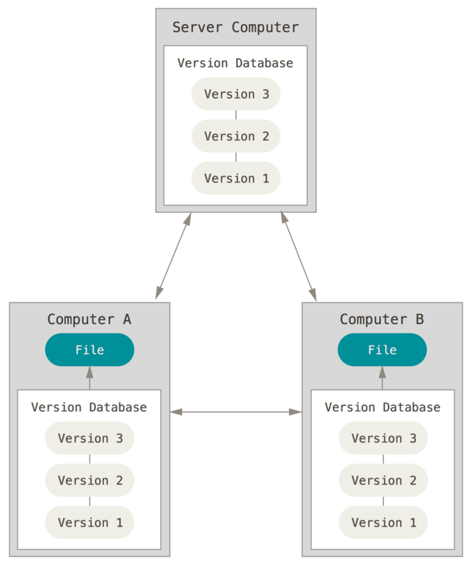
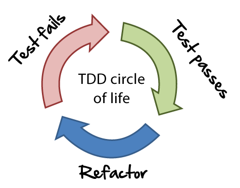
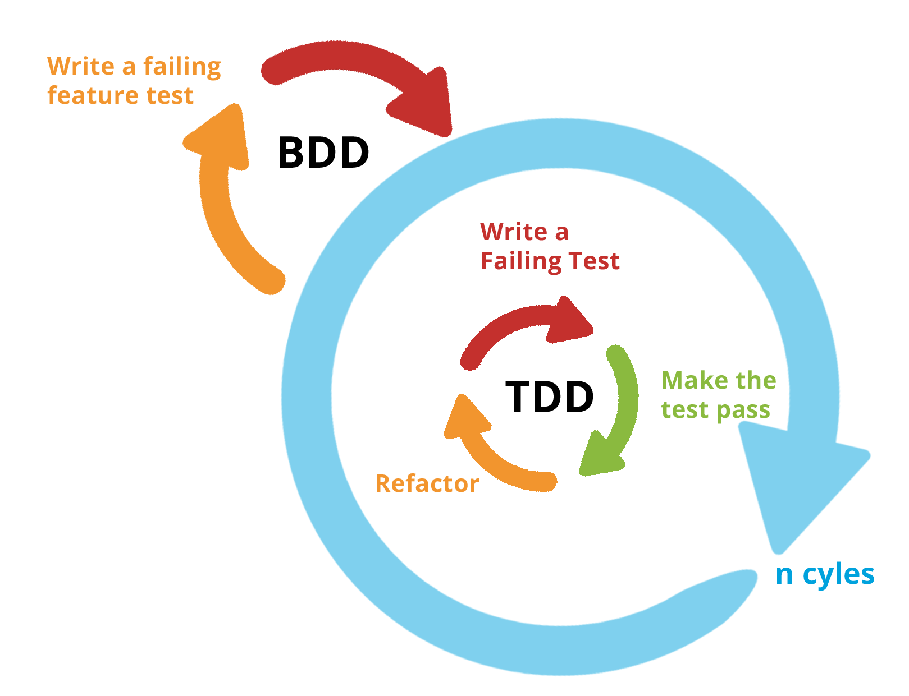
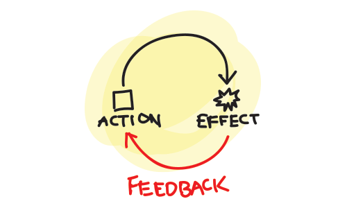

docker-compose up -d # Démarrage
docker-compose stop # Suspendre
docker-compose kill # Arrêt brutal
docker-compose down -v # Tout supprimer une fois arrêtéIntroduction au CI/CD
ENSG - Décembre 2019
Présentation disponible à l’adresse: https://dduportal.github.io/ensg-ci-cd/GHSA-7wwv-vh3v-89cq
Version PDF de la présentation : Cliquez ici
This work is licensed under a Creative Commons Attribution 4.0 International License
Code source de la présentation: https://github.com/dduportal/ensg-ci-cd/tree/GHSA-7wwv-vh3v-89cq
Comment utiliser cette présentation ?
Pour naviguer, utilisez les flèches en bas à droite (ou celles de votre clavier)
Gauche/Droite: changer de chapitre
Haut/Bas: naviguer dans un chapitre
Pour avoir une vue globale : utiliser la touche "o" (pour "Overview")
Pour voir les notes de l’auteur : utilisez la touche "s" (pour "Speaker notes")
Bonjour !
Whoami
Freelancer
Former Developer Advocate @ Containous
Former Training Engineer @ CloudBees
Former Geoportail Tech Lead @ Worldine
Contact:
mailto:damien.duportal@gmail.com
Et vous ?
Organisation du Cours
Objectifs
Découvrir (ou redécouvrir) les bases des éléments de la "chaîne de production logicielle"
SCM, Tests, Sécurité, etc.
Découvrir les concepts de l’Intégration Continue et du Déploiement Continu
Découvrir Jenkins
Mettre en oeuvre Jenkins en tant que développeur
Temps
2 jours ensemble
Matin:
09:00 → 10:30
11:00 → 12:30
Après-Midi:
13:30 → 15:00
15:30 → 17:00 = Evaluation
Evaluation
QCM: 25 % de la note
Rendu de TP: 75 % de la note
QCM
But : évaluer l’acquisition des concepts théoriques autour du CI/CD
Format :
15 questions à choix multiples portant sur les 2 jours
Pas de points négatifs
Temps limité: 15 minutes
Rendu de TP
But : évaluer l’acquisition de compétences de mise en oeuvre basiques autour du CI/CD
Format:
Rendu public dans GitHub : valorisable sur vos CVs
Réutilisation d’un de vos projets
Temps:
Estimation du travail personnel: 4h +- 1h
Dates de remise des consignes et rendus à définir ensemble
3 semaines entre les deux
Source Code Management (SCM)
"Gestion de Code Source"
Qu’est ce que le SCM ?
Les Gestionnaires de Code Source, également connus comme "Version Control Systems" (VCS):
Sont des systèmes logiciels
Conservent toutes les modifications apportées à une collection de fichiers, dans le temps
Permettent de partager ces changements
Fournissent des fonctionnalités de merge et de suivi des modifications
Pourquoi les SCM ?
Pour collaborer efficacement sur un même référentiel de code source
Aide à la résolution de conflits
Partage de contenu facile
Pour conserver une trace de tous les changements : On parle de source unique de vérité (Single Source of Truth)
Historique complet des modifications
Possibilité de retour arrière à tout moment
Quels sont les types de SCM ?
Locaux
Centralisés
Distribués
SCM Locaux

Plus vieux type, ancêtre de tous les autres
Uniquement historique de modification
Utilise une "base de donnée de versions" des fichiers
Stockage uniquement des différences ("diff")
Pas de partage
Exemple: rcs (toujours dans Apple XCode Tools)
SCM Centralisés (CVCS)
Couvre historique ET partage
La "base de données de versions" est stockée sur un serveur central
Chaque client ne possède qu'une seule version du code

Apprentissage très facile, limité sur la résolution de conflits
Exemples: CVS, SVN, Perforce, TFS
SCM Distribués (DVCS)
La "base de données de versions" est distribuée par duplication sur chaque noeud
Exemples: Git, Mercurial, Bazaar, Monotone

Comment héberger son SCM ?
Hébergés dans le Cloud
Hébergé "à la maison"
SCM "Hébergés dans le Cloud"
SCM as a Service
Le serveur centralisé est un service hébergé par un fournisseur
Avantages:
Pas de temps/énergie passé sur la gestion
Associent au SCM d’autres services : gestionnaire de tickets, wiki, éditeur de texte online, etc.
Risque: Votre code est hébergé par un tiers
Exemples: GitHub, Bitbucket by Atlassian, Amazon CodeCommit, Visual Studio Online by Microsoft, SourceForge, GitLab.com, etc.
SCM "Hébergés à la maison"
Pour pallier au risque précédent, on trouve des versions "On-Premise" (généralement payantes)
Le monde de l’Open Source fournit également des solutions à héberger soi-même
Très souvent gratuit et on peut le corriger
Temps et énergie à consacrer
Exemples: Gitlab, Gitea, Gogs, Bazaar server, VisualSVN Server, etc.
Terminologie des SCM : Basiques
diff: un ensemble de lignes "changées" sur un fichier donné
changeset: un ensemble de "diff" (donc peut couvrir plusieurs fichiers)
commit: action de sauvegarder un changeset dans la base de données des versions.
Terminologie des SCM : Représentation
Le dernier commit dans l’historique est aliasé comme "HEAD"

Terminologie des SCM : Branches
Abstraction d’une version "isolée" du code
Concrètement, une branche est un alias pointant vers un "commit"
Terminologie des SCM : Merge
On intègre une branche dans une autre en effectuant un merge
Un nouveau commit est créé, fruit de la combinaison de 2 autres commits
Terminologie des SCM : Pull Request
Une Pull Request (ou "Merge Request") est une procédure de revue de code avant intégration
Motifs d’utilisation des SCMs ?
Voici quelques motifs d’utilisation des SCMs :
"Centralized" Flow
"Feature Branch" Flow
"Git" Flow
"GitHub" Flow
Centralized Flow
Feature Branch Flow
Git Flow
GitHub Flow

Résoudre des problèmes avec le SCM
"Infrastructure as Code" :
Besoins de traçabilité, de définition explicite et de gestion de conflits
Collaboration requise pour chaque changement (revue, responsabilités)
Code Civil:
Pour aller plus loin…
Un peu de lecture :
Pourquoi tester un logiciel ?
Le code est donc sujet à erreurs: Conséquences?
Les tests identifient ces erreurs, dans un but de correction
Qu’est ce que le "test logiciel" ?
Le test logiciel est une pratique suivant 2 piliers :
Valider que le logiciel remplisse les rôles qui lui sont confiés
Rechercher les fautes pour les corriger, améliorant la qualité du système
Tests Automatisé ou Manuels ?
Automatiser : répétition et reproductibilité
Test Manuel à considérer dans peu de cas, quand :
Coût de l’automatisation dépasse sa valeur
Automatisation impossible
Terminologie du Test Logiciel
SUT: "System Under Testing". Définit les frontières du système.
Test Double: Terme générique désignant un sous-ensemble simplifié du "S.U.T.". Exemples: Mock, Stub, Spy, etc.
Boîte Blanche: Tester avec une vue interne du SUT
Boîte Noire: Tester le SUT sans connaissance préalable de ses mécanismes internes
Comment tester le logiciel ?
La question primordiale est: "Que voulez-vous tester ?"
En fonction de la réponse, différent types de tests peuvent être utilisés (liste NON exhaustive) :
Unit testing
Integration testing
Smoke testing
Functional Testing
Non-Regression testing
Acceptance testing
Test Unitaire
Focalisé sur le plus petit sous-sytème possible du SUT, en "boîte blanche"
Tests indépendants les uns des autres
Ordre d’exécution non important
Utilisation de Test Doubles pour simuler le "reste" en bon fonctionnement
Tests d’Intégration
Vérifier l’intégration entre différents sous-systèmes
Le SUT est en "boîte blanche"
Smoke Testing
But : Fail Fast en "boîte blanche"
Valide les fonctions "de base" du système
On parle parfois de "Sanity Checking"
If it smokes, it’s bad
— Anonymous Electrician
Tests Fonctionnels
Vérifie que le logiciel se comporte comme prévu par les personnes en charge de la fabrication
Pas de biais d’interprétation
Le SUT est en "boîte noire"
Tests de Régression
Vérifie que le SUT a un comportement stable dans le temps
Focalisation sur bug qui ne doit pas revenir
Le SUT est en "boîte noire"

Correcting a single bug may introduce several more.
— Any developer
Tests d’Acceptation
Également connu sous l’acronyme "UAT" User Acceptance Testing
Vérifie que le logiciel se comporte comme attendu par l’utilisateur
Biais de communication inclus
Le SUT est en "boîte noire"
Ordre des Tests
Fonction des temps d’exécutions, des coûts de corrections, et des valeurs ajoutées. Contextuel.

Test Driven Development
TDD: Écrire les tests unitaires avant le code

Behaviour Driven Development
BDD: Privilégier language naturel et interactions
"Given, When, Then"
Moins de technique. Valeur ajoutée pour l’utilisateur.

Pour aller plus loin…
(FR) http://douche.name/blog/nomenclature-des-tests-logiciels/
http://martinfowler.com/bliki/TestDrivenDevelopment.html = "Continuous Everything"
Qu’est ce que l’Intégration Continue ?
Continuous Integration is a software development practice where members of a team integrate their work frequently. Usually each person integrates at least daily - leading to multiple integrations per day.
— Martin Fowler - Continuous Integration
Intégration Continue (CI)

Construire et intégrer le code en continu
Le code est intégré souvent, au moins quotidiennement pour que l’intégration soit un non-évenement
Chaque intégration est validée par une construction automatisée avec tests
Pourquoi la CI ?
But : Détecter les fautes au plus tôt

Continuous Integration doesn’t get rid of bugs, but it does make them dramatically easier to find and remove.
— Martin Fowler
Livraison Continue
Continous Delivery (CD)
Pourquoi la Livraison Continue ?
Diminuer les risque liés au déploiement
Permettre de récolter des retours utilisateurs plus souvent
Rendre l’avancement visible par tous
How long would it take to your organization to deploy a change that involves just one single line of code?
— Mary and Tom Poppendieck
Qu’est ce que la Livraison Continue ?
Suite logique de l’intégration continue:
Chaque changement est potentiellement déployable en production
Le déploiement peut donc être effectué à tout moment
Your team prioritizes keeping the software deployable over working on new features
— Martin Fowler
Déploiement Continu
Continuous Deployment
Qu’est-ce que le Déploiement Continu ?
Version "avancée" de la livraison continue:
Chaque changement est déployé en production, de manière automatique
Question importante: En avez-vous besoin ?
Avez-vous les mêmes besoins que Amazon Google ou Netflix ?
Continuous Delivery versus Deployment

Pour aller plus loin…
La boucle de rétroaction
"Feedback loop" / "Boucle de feedback"
Pourquoi de la rétroaction ?
Problèmatique : réagir rapidement pour corriger une faute
"Au plus tôt, au moins cher"
Problème #1: Avoir un retour
Problème #2: Réagir systématiquement sur un retour
Problème #3: Avoir confiance
Qu’est-ce qu’une boucle de Feedback ?

Comment implémenter la rétroaction ?
Quels acteurs du système ?
Quel médium de communication ?
Quels déclencheurs et quelles limites ?
Culture à construire, les outils suivent facilement
Chaîne Logistique du Logiciel
The Pipeline
Qu’est-ce qu’un Pipeline ?
Industrialisation du logiciel
Modélisation de la chaîne de valeur ("Value Stream Mapping")
"Fast is cheap": Piloté par le concept de la défaillance rapide ("fail fast")
Anatomie d’un "Pipeline" 1/2
Stage ("étape"): Élément de base
Abstraction atomique d’un ensemble d’actions
Exemple: "Build", "Run Unit Tests"
Possibilité de parallélisation
Gate ("Porte"): Transition entre 2 étapes
Manuelle ou automatique
Peuvent être conditionnelles
Anatomie d’un "Pipeline" 2/2
Déclenchement initial : un changement dans la base de code
Chaque étape peut produire des livrables: on parlera d'Artefacts dans ce cours
Etapes de "Deploiement"
Le déploiement est ce qui permet de rendre le logiciel prêt à l’usage
Un "déploiement" est exécuté vers un environnement
Production
Préproduction ("staging") / recette ("qualification")
Tests
"Disaster Recovery Environment"
Un example de Pipeline
Comment faire des "bons" Pipelines ?
Commencer par un "Produit Minimum Viable" (MVP) puis itérer
S’efforcer d’appliquer les bonne pratiques
Optimiser le Pipeline (lors des itérations)
Bonnes Pratiques
Réutilisation des artefacts: "Only Build Your Binaries Once"
Arrêt du Pipeline dès qu’une faute est identifiée: "Fail Fast"
Identifier si un artefact n’est pas déployable (tests…)
S’assurer qu’une même version de la base de code est utilisée à tout moment pour un Pipeline donné
Optimiser le Pipeline
Paralléliser les étapes
Arrêt du Pipeline si une "branche" est en erreur
Sinon: étape inutile à supprimer
Les "gates" manuelles peuvent également être parallélisée
relation "1-N": N "gates" manuelles déclencheront N étapes parallèles
Exemple de Pipeline optimisé
Pour aller plus loin…
Pourquoi la Sécurité ?
Votre organisation utilise l'information pour créer de la valeur
L’information doit donc être:
Confidentielle
Intègre
Disponible
Qu’est-ce que la Sécurité ?
C’est l’ensemble des pratiques et des outils permettant de prévenir et combattre les menaces sur l’organisation
4 piliers:
Connaissance du sytème
Least Privilege
Défense en profondeur
Mieux vaut prévenir que guérir
AAA
AAA signifie :
Authentification
Authorisation
Accounting (comptabilisation)
Authentification
C’est l’ensemble des procédures et outils pour identifier un acteur avec une confiance suffisante
Authorisation
Une fois l’acteur identifié avec confiance, il faut contrôler ses droits en terme de manipulations
Nomenclature :
Ressources: Tâches ou objets manipulables et accessibles
Rôles: Ensemble de droits regroupés par commodité
Requêteurs: Acteur souhaitant manipuler des ressources
Accounting (Comptabilisation)
Etre autorisé à manipuler des ressources ne garantie pas l’effection à 100%
Limites du système (mémoire, disque, consommation, temps, etc.)
Erreurs, pannes et fautes
L'"accounting" permet de mesurer et contrôler les manipulations
Respect des limites
Reprises sur erreur
Capacity planning
Pour aller plus loin…
Démarrer le lab
Pré-requis
Git
Docker 18.03+
docker-compose 1.24.0+
Configurer le proxy HTTP: https://docs.docker.com/config/daemon/systemd/#httphttps-proxy
Obtenir le projet
Clone le dépot https://github.com/dduportal/ensg-ci-cd
Se positionner sur la branche
2019-2020(git checkout <branch name>)Se positionner dans le dossier
lab-vm/docker
Démarrer / Arrêter le lab
2019-2020 HotFix Gitea
# Arrêter le gitserver
docker-compose kill gitserver
# Nettoyer le gitserver
docker-compose rm -f -v gitserver
# Récupérer le fix
git pull origin 2019-2020
# Récupérer la nouvelle image
docker-compose pull gitserver
# Redémarrer le gitserver
dockr-compose up -d gitserverAccéder au Lab
Dans votre navigateur, ouvrir https://localhost
Accepter l’exception de sécurité ou ajouter le certificat comme "trusted"
Bienvenue sur la page d’accueil du Lab:
Le lien Slides vous permettra d’accéder au slides
Accéder au code source
Cliquer sur le lien Git Server sur la page d’accueil du Lab
S’authentifier en tant que
butler(mot de passebutler)
Cliquer sur Explore (en haut)
Cliquer sur butler/demoapp
Demo Application
Pourquoi ?
But : Illustrer un exemple de "Software Supply Chain"
Problématique : Quel language/framework/outil choisir ?
Solution:
"Opinionated" demo application
Tout le monde sur le même pied
Demo Application
Application Web
Page d’accueil affichant "Greetings from Spring Boot!"
Demo Application : Technical Stack
C’est un des exemples de Spring Boot Starter
Langage: Java (OpenJDK 8)
Toolchain: Maven (Maven >= 3.3)
Code source stocké dans un dépôt Git
Demo Application : Check it
Configuration Maven:
pom.xmlCode source de l’application:
src/main/java/Code source des tests:
src/testScripts utilitaires:
scripts
Web Command Line
Ouvrir la console DevBox
WebSockets doit être autorisé
Command Line Tricks
Clean the window:
clearShow command history:
historyCTRL + R: search the command history interactivelyCTRL + C: cancel current command and clean line bufferCTRL + A: jump to beginning of lineCTRL + E: jump to end of line
Quelques commandes
cat(concatenate)ls(list)cd(change directory)pwd(print working directory)man(manual)rm(remove)mkdir(make directory)touch(create an empty file)
Obtenir le code de la demo
Obtenir l’adresse HTTP du dépôt depuis le GitServer
# Get the code. Requires authentication.
git clone http://gitserver:3000/butler/demoapp
# Browse to the local repository
cd ./demoapp
# Check source code
ls -lDemo Application : Maven
Maven TL;DR:
Workflow standardisé
pom.xmldécrit l’application (Project Object Model)
Maven Command line :
mvn, attend des goals en argumentmvn dependency:listAccepte des flags
mvn dependency:list -fn
Demo Application : Compiler
Goal
compileRésolution des dépendances
Pré-traitement du code source
Compilation des classes
Résultats dans le dossier
./target:mvn compile ls -l ./target
Demo Application : Tests Unitaires
Goal
testExécute le goal
compileCompilation des tests unitaires
Exécution des tests unitaires
Rapports de tests dans
./target/surefire-reports:mvn test ls -l ./target/surefire-reports
Demo Application : Construire
goal
packageExécute les goals
compileettestPaquetage de l’application
Résultat dans
./targetmvn package ls -lrh ./target/
Demo Application : Exécution
Spring Boot demo exécutée comme un "Über-Jar"
Exécution avec la commande java:
java -jar ./target/demoapp.jar # Utiliser CTRL-C pour arrêterOuvrir la page http://localhost:8080, ou tester avec la commande
curldans une autre instance de DevBox avec :curl http://localhost:8080 && echo
Demo Application : Tests d’intégration
Goal
verifyExécute
compile,testetpackageCompile et exécute les tests d’intégration sur l’application empaquetée
Rapport de tests dans
./target/failsafe-reports:mvn verify # 1 test failure expected ls -l ./target/failsafe-reports
Jenkins
Meet Jenkins
Jenkins is an open source automation server which enables developers around the world to reliably build, test, and deploy their software.
Jenkins
Orchestrateur de tâches Open Source
#1 Serveur Intégration Continue Integration
Un des tout premiers moteur d’intégration continue
Créé par Kohsuke Kawaguchi en 2006
Architecture orientée plugins
Communauté Jenkins
Une communauté indépendante et active (jenkins.io)
Projet original: "Hudson", renommé "Jenkins" en 2011
500+ releases
150,000+ installations actives
1,200+ plugins
Un Outil Populaire
Jenkins en 2016 : Jenkins 2
But : CI → CD
Pas de "cassure" depuis Jenkins 1
Expérience "premier démarrage" améliorée
Pipeline-as-Code:
Syntaxe "scriptée" : "Code your Pipeline"
Jenkins en 2017

Un outil pour définir votre "Pipeline" dans Jenkins avec un language de domaine
Le Pipeline est décrit dans un fichier texte: le
JenkinsFile"Pipeline-as-code" : Stocké dans un SCM
Débuter avec les pipelines
Débuter avec les Pipelines
"Pipeline-as-code" : Nous avons besoin d’un
JenkinsfilePar où commencer ?
Syntaxe Déclarative ou Scriptée ?
Declarative
Syntaxe par défaut
S’utilise avec Blue Ocean
Scripted
Syntaxe originale (~3 ans)
"Great Power == Great Responsibility"
À utiliser lorsque le Déclaratif commence à être bizarre
Blue Ocean Pipeline Editor
Fournit le cycle ("round trip") complet avec le SCM
Pas de Pipeline ? "Suivez le guide".
Le Pipeline existe déjà ? Edit, commit, et exécutez le
Simple Jenkins Pipeline
Accéder à Jenkins
Cliquez sur le lien "Jenkins" sur la page d’accueil du lab
Authentifiez vous en tant que
butler(le mot de passe estbutler)
Blue Ocean
Passez à l’interface Blue Ocean:
Ou cliquez sur le lien "Open Blue Ocean" à gauche
Exercice : Configurer le projet dans Jenkins
Créer un nouveau Pipeline, avec les réglages suivants :
Stocké dans Git
Utilisez l’URL en SSH
La clef SSH a déjà été préparée pour vous
(Dans Gitea, en haut à droite → "Settings" → "SSH/GPG Keys")
Si la page est bloquée: rechargez !
Exercice : L’éditeur de Pipeline
Cliquez sur le bouton Create a Pipeline
Aucun fichier
Jenkinsfilen’est trouvé dans le dépôt de code: Le Blue Ocean Pipeline Editor s’ouvre pour en générer un.Familiarisez-vous avec l’interface:
Pour créer une étape ("stage"), utilisez le petit "plus" ()
Cliquez sur une étape pour voir le panneau de configuration à droite
Exercice : Votre Premier Pipeline
Créez un pipeline avec 3 "stages" : Build, Test et Deploy
Chaque "stage" doit avoir 1 "step" qui affiche un message
"Building…" pour Build, "Testing…" pour Test …
Solution : Votre Premier Pipeline
pipeline {
agent any
stages {
stage('Build') {
steps {
echo 'Build'
}
}
stage('Test') {
steps {
echo 'Test'
}
}
stage('Deploy') {
steps {
echo 'Deploy'
}
}
}
}Exercice : Exécuter des tâches
En utilisant Blue Ocean Pipeline Editor:
Modifiez les 3 stages du pipeline actuel
Les scripts sont stockés dans le dossier
./scriptsUtilisez la "step" Shell Script (mot clef
sh)Supprimez les steps
echo
Solution : Exécuter des tâches
pipeline {
agent any
stages {
stage('Build') {
steps {
sh './scripts/build.sh'
}
}
stage('Test') {
steps {
sh './scripts/integration-tests.sh'
}
}
stage('Deploy') {
steps {
sh './scripts/deploy.sh'
}
}
}
}Exercice : Archives et Tests
En utilisant le Blue Ocean Pipeline Editor:
Modifiez le pipeline actuel
La "stage" Build doit archiver tous les fichiers ".jar" générés
Indice : Dans le dossier
target, motif*.jar
La "stage" Test doit publier récursivement tous les rapports de test
junitd’intégrationIndice : Dans le dossier
target, motiffailsafe-reports/**/*.xml
Le Pipeline doit être UNSTABLE
Solution : Archives et Tests
pipeline {
agent any
stages {
stage('Build') {
steps {
sh './scripts/build.sh'
archiveArtifacts 'target/*.jar'
}
}
stage('Test') {
steps {
sh './scripts/integration-tests.sh'
junit 'target/failsafe-reports/**/*.xml'
}
}
stage('Deploy') {
steps {
sh './scripts/deploy.sh'
}
}
}
}Amélioration du Pipeline
Exercise: Réparer le build
Le build est en état
UNSTABLE(jaune)Priorité: réparer le build
Utiliser Gitea git server
Les tests d’intégration sont dans
src/test/java/helloIndice:
Integration Tests: == IT
Pour relancer le build : depuis l’accueil Blue Ocean, naviguez sur le projet → Branches, et regardez à droite, dans la ligne correspondant à "master"
Solution: Réparer le build
Éditer le fichier src/test/java/hello/HelloControllerIT.java
Commenter la ligne 39
Dé-commenter la ligne 40
Lancer le build manuellement dans Blue Ocean
Attention: ne pas utiliser "Re-run" (même commit)
Le build résultant doit être stable
Webhooks pour un retour plus rapide
Nous avons dû lancer le build manuellement
IC: Retours rapides !
Lancer le build dès que le code est poussé
Exercise: Webhooks
Configurons un "Webhook" dans Gitea → Settings → Webhooks
Ajoutez un nouveau webhook:
Type: Gitea
Target URL:
http://jenkins:8080/jenkins/git/notifyCommit?url=ssh://git@gitserver:5022/butler/demoapp.gitTrigger On: All events
Une fois créé, testez le (cliquez sur le webhook, puis tout en bas)
Solution: Webhooks
Ajoutez un commentaire dans le Jenkinsfile depuis Gitea git server
Un build va démarrer
Validez dans l’onglet "Changes"
Aller plus loin…
Dans l’éditeur Blue Ocean, voir la version textuelle:
Combinaison
CTRL + S(On Mac:CMD +S)Bi-directionnel: essayez de charger une solution de pipeline
Le Pipeline Syntax Snippet Generator comme acolyte:
Génération dynamique en fonction de vos plugins
Depuis l’interface "ancienne" de Jenkins
Menu de gauche de votre job "Pipeline" (ou MultiBranch)
Exercise - Réutilisation Binaire
But: réutiliser les binaires générés dans Build
Action: "mise sur étagère": Stash / Unstash
Modifier le Pipeline pour :
"Stasher" le dossier
target(récursivement), à la fin de la phase BuildIndice : Dans le dossier
target, motiftarget/**/*
"Unstasher" au début de la phase Test
Indice : Attention à l’ordre !
Solution - Réutilisation Binaire
pipeline {
agent any
stages {
stage('Build') {
steps {
sh './scripts/build.sh'
archiveArtifacts 'target/*.jar'
stash(name: 'build-result', includes: 'target/**/*')
}
}
stage('Test') {
steps {
unstash 'build-result'
sh './scripts/integration-tests.sh'
junit 'target/failsafe-reports/**/*.xml'
}
}
stage('Deploy') {
steps {
sh './scripts/deploy.sh'
}
}
}
}Post-Stage
Section
post:Contient des "steps" à exécuter à la fin du Pipeline ou après une "stage"
Divisée en "condition d’états":
always,success,failure,changed
Chaque condition contient ses propres "steps"
Pas encore intégré dans l’éditeur Blue Ocean
Exercice - Rapport de Tests Unitaires
Si le "stage" Build échoue, alors la tâche "archiveArtifacts" ne devrait pas être exécutée
Même chose pour
stash
Les rapports de tests unitaires doivent être publiés dans tous les cas après la phase Build
Format Junit
Stockés dans
target/**/*.xml
Utiliser la documentation:
Solution - Rapport de Tests Unitaires
pipeline {
agent any
stages {
stage('Build') {
steps {
sh './scripts/build.sh'
}
post {
success {
archiveArtifacts 'target/*.jar'
stash(name: 'build-result', includes: 'target/**/*')
}
always {
junit 'target/surefire-reports/**/*.xml'
}
}
}
stage('Test') {
steps {
unstash 'build-result'
sh './scripts/integration-tests.sh'
junit 'target/failsafe-reports/**/*.xml'
}
}
stage('Deploy') {
steps {
sh './scripts/deploy.sh'
}
}
}
}Agents
Qu’est ce qu’un Agent?
Un noeud (ou node) est une machine prête à recevoir des builds
Step
agentspécifie sur quel "noeud" exécuter des "stages".Une section
agentglobale doit être définie (au niveau du blockpipeline)On peut aussi définir des sections
agentpar "stage"
Exercice : Agents
Exécuter l’étape Build sur un agent configuré avec le label
maven-jdk8Exécuter l’étape Test sur un agent configuré avec le label
java8L’éditeur Blue Ocean est utilisable
Solution : Agents
pipeline {
agent any
stages {
stage('Build') {
agent {
node {
label 'maven-jdk8'
}
}
steps {
sh './scripts/build.sh'
}
post {
always {
junit 'target/surefire-reports/**/*.xml'
}
success {
archiveArtifacts 'target/*.jar'
stash(name: 'build-result', includes: 'target/**/*')
}
}
}
stage('Test') {
agent {
node {
label 'java8'
}
}
steps {
unstash 'build-result'
sh './scripts/integration-tests.sh'
junit 'target/failsafe-reports/**/*.xml'
}
}
stage('Deploy') {
steps {
sh './scripts/deploy.sh'
}
}
}
}Exercice : Tests Parallèles
But: Tester en parallèle l’application sur java 8 et la future version de java
Mot clef
paralleldéfinissant un block contenant des "stages"Agent
javanextpour le Test Java "Future version"L’éditeur Blue Ocean est utilisable (et recommandé)
Solution : Tests Parallèles
pipeline {
agent any
stages {
stage('Build') {
agent {
node {
label 'maven-jdk8'
}
}
steps {
sh './scripts/build.sh'
}
post {
always {
junit 'target/surefire-reports/**/*.xml'
}
success {
archiveArtifacts 'target/*.jar'
stash(name: 'build-result', includes: 'target/**/*')
}
}
}
stage('Test') {
parallel {
stage('Test Java 8') {
agent {
node {
label 'java8'
}
}
steps {
unstash 'build-result'
sh './scripts/integration-tests.sh'
junit 'target/failsafe-reports/**/*.xml'
}
}
stage('Test Java Next') {
agent {
node {
label 'javanext'
}
}
steps {
unstash 'build-result'
sh './scripts/integration-tests.sh'
junit 'target/failsafe-reports/**/*.xml'
}
}
}
}
stage('Deploy') {
steps {
sh './scripts/deploy.sh'
}
}
}
}Agents avec Docker
But: Usage de Docker pour faciliter la définition des environnements de build
Le mot clef
agentpermet d’exécuter les "stages" dans un container Docker, depuis une "image Docker", ou depuis unDockerfile(recette maison d’images Docker)
Exercice : Agent Docker
Exécuter le Build dans un containeur basé sur le fichier
Dockerfile.build
Solution : Agent Docker
pipeline {
agent any
stages {
stage('Build') {
agent {
dockerfile {
filename 'Dockerfile.build'
label 'docker'
additionalBuildArgs '--build-arg HTTP_PROXY=http://10.0.4.2:3128/ --build-arg HTTPS_PROXY=http://10.0.4.2:3128/'
}
}
steps {
sh './scripts/build.sh'
}
post {
always {
junit 'target/surefire-reports/**/*.xml'
}
success {
archiveArtifacts 'target/*.jar'
stash(name: 'build-result', includes: 'target/**/*')
}
}
}
stage('Test') {
parallel {
stage('Test Java 8') {
agent {
node {
label 'java8'
}
}
steps {
unstash 'build-result'
sh './scripts/integration-tests.sh'
junit 'target/failsafe-reports/**/*.xml'
}
}
stage('Test Java Next') {
agent {
node {
label 'javanext'
}
}
steps {
unstash 'build-result'
sh './scripts/integration-tests.sh'
junit 'target/failsafe-reports/**/*.xml'
}
}
}
}
stage('Deploy') {
steps {
sh './scripts/deploy.sh'
}
}
}
}Docker
Docker: un environment portable
Problème courante : Environnements différents entre le poste du dév. et la production
Solution: Utiliser Docker pour définir un environment portable
Exercices avec Docker
## Construire uniquement l'environnement de build
docker build --build-arg HTTP_PROXY=http://10.0.4.2:3128/ \
--build-arg HTTPS_PROXY=http://10.0.4.2:3128/ \
-t demoapp:build -f Dockerfile.build ./
## Executer un container
mvn -v
docker run --rm -ti -v $(pwd):/app --entrypoint="bash" demoapp:build
bash-4.4# ls -al /app
bash-4.4# mvn -v # Difference ?Agents avec Docker
But: Usage de Docker pour faciliter la définition des environements de build
Le mot clef
agentpermet d’exécuter les "stages" dans un container Docker, depuis une "image Docker", ou depuis unDockerfile(recette maison d’image Docker)
Exercice : Agent Docker
Exécuter l’étape Build dans un containeur basé sur le fichier
Dockerfile.buildAttention, le proxy doit être précisé à Jenkins. Comment passer le flag
--build-argdans le pipeline?Indice : Documentation Directive Agent sur jenkins.io
Attention, le proxy doit également être passé à Maven, qui ne sait pas lire la variable
HTTP_PROXYIndice : Documentation de Maven sur la configuration d’un proxy
Indice : L’utilisateur par défaut dans
Dockerfile.buildestroot. SonHOMEest le dossier/rootIndice : Vous pouvez tester dans la devbox de manière interactive
Solution : Agent Docker 1/3
Fichier Jenkinsfile :
pipeline {
agent any
stages {
stage('Build') {
agent {
dockerfile {
filename 'Dockerfile.build'
label 'docker'
additionalBuildArgs '--build-arg HTTP_PROXY=http://10.0.4.2:3128/ --build-arg HTTPS_PROXY=http://10.0.4.2:3128/'
}
}
steps {
sh './scripts/build.sh'
}
post {
always {
junit 'target/surefire-reports/**/*.xml'
}
success {
archiveArtifacts 'target/*.jar'
stash(name: 'build-result', includes: 'target/**/*')
}
}
}
stage('Test') {
parallel {
stage('Test Java 8') {
agent {
node {
label 'java8'
}
}
steps {
unstash 'build-result'
sh './scripts/integration-tests.sh'
junit 'target/failsafe-reports/**/*.xml'
}
}
stage('Test Java Next') {
agent {
node {
label 'javanext'
}
}
steps {
unstash 'build-result'
sh './scripts/integration-tests.sh'
junit 'target/failsafe-reports/**/*.xml'
}
}
}
}
stage('Deploy') {
steps {
sh './scripts/deploy.sh'
}
}
}
}Solution : Agent Docker 2/3
Fichier settings.xml :
<settings>
<proxies>
<proxy>
<id>httpproxy</id>
<active>true</active>
<protocol>http</protocol>
<host>10.0.4.2</host>
<port>3128</port>
<nonProxyHosts>ensg.eu|localhost</nonProxyHosts>
</proxy>
<proxy>
<id>httpsproxy</id>
<active>true</active>
<protocol>https</protocol>
<host>10.0.4.2</host>
<port>3128</port>
<nonProxyHosts>ensg.eu|localhost</nonProxyHosts>
</proxy>
</proxies>
</settings>Solution : Agent Docker 3/3
FROM maven:3-jdk-8-alpine
# Install Some tools
RUN apk add --no-cache \
curl \
bats \
docker \
git
# Configure Proxy
RUN mkdir -p /root/.m2
COPY ./settings.xml /root/.m2/settings.xmlPipeline Avancés
Input
Jenkins permet de "mettre en pause" l’exécution d’un pipeline, en attendant une validation humaine
Continuous Delivery / Deployment
Mot-clef
input, c’est une "step" PipelineHautement configurable: Documentation Step Input
Généralement utilisé dans un "stage" dédié.
Obligatoirement avec
agent none(pas d’exécuteur, pas de workspace)
Exercice : Validation Humaine
Ajouter une stage "approval" avant le déploiement
Solution : Validation Humaine
pipeline {
agent any
stages {
stage('Build') {
agent {
dockerfile {
filename 'Dockerfile.build'
label 'docker'
additionalBuildArgs '--build-arg HTTP_PROXY=http://10.0.4.2:3128/ --build-arg HTTPS_PROXY=http://10.0.4.2:3128/'
}
}
steps {
sh './scripts/build.sh'
}
post {
always {
junit 'target/surefire-reports/**/*.xml'
}
success {
archiveArtifacts 'target/*.jar'
stash(name: 'build-result', includes: 'target/**/*')
}
}
}
stage('Test') {
parallel {
stage('Test Java 8') {
agent {
node {
label 'java8'
}
}
steps {
unstash 'build-result'
sh './scripts/integration-tests.sh'
junit 'target/failsafe-reports/**/*.xml'
}
}
stage('Test Java Next') {
agent {
node {
label 'javanext'
}
}
steps {
unstash 'build-result'
sh './scripts/integration-tests.sh'
junit 'target/failsafe-reports/**/*.xml'
}
}
}
}
stage('Approval') {
agent none
steps {
input(message: 'Deploy Application?', ok: 'Yes Deploy!')
}
}
stage('Deploy') {
steps {
sh './scripts/deploy.sh'
}
}
}
}Conditionnal Stage
Définir l’exécution conditionnelle d’une "stage"
Mot clef
whenDoit contenir au moins une condition parmi:
branchenvironmentexpressionLogique "built-in":
allOf,anyOf, etc.
Variables d’environments
Définir des collections de clé-valeurs, en tant que variables d’environnement:
Définition globale ou par "stage"
Ou en utilisant
withEnvdans un blockstepspour une instruction spécifique
Exercice : Déploiement Conditionnel
N’exécuter les "stages" Approval et Deploy que:
Si on se trouve sur la branche
masterOu si la variable
FORCE_DEPLOYest àtrue
Solution : Déploiement Conditionnel
pipeline {
agent any
environment {
FORCE_DEPLOY = 'false'
}
stages {
stage('Build') {
agent {
dockerfile {
filename 'Dockerfile.build'
label 'docker'
additionalBuildArgs '--build-arg HTTP_PROXY=http://10.0.4.2:3128/ --build-arg HTTPS_PROXY=http://10.0.4.2:3128/'
}
}
steps {
sh './scripts/build.sh'
}
post {
always {
junit 'target/surefire-reports/**/*.xml'
}
success {
archiveArtifacts 'target/*.jar'
stash(name: 'build-result', includes: 'target/**/*')
}
}
}
stage('Test') {
parallel {
stage('Test Java 8') {
agent {
node {
label 'java8'
}
}
steps {
unstash 'build-result'
sh './scripts/integration-tests.sh'
junit 'target/failsafe-reports/**/*.xml'
}
}
stage('Test Java Next') {
agent {
node {
label 'javanext'
}
}
steps {
unstash 'build-result'
sh './scripts/integration-tests.sh'
junit 'target/failsafe-reports/**/*.xml'
}
}
}
}
stage('Approval') {
agent none
steps {
input(message: 'Deploy Application?', ok: 'Yes Deploy!')
}
when {
anyOf {
branch 'master'
environment name: 'FORCE_DEPLOY', value: 'true'
}
}
}
stage('Deploy') {
steps {
sh './scripts/deploy.sh'
}
when {
anyOf {
branch 'master'
environment name: 'FORCE_DEPLOY', value: 'true'
}
}
}
}
}Paramètres
Directive
parameters: l’utilisateur fournit des arguments au pipelineDisponible en tant que variables accessibles dans l’objet
paramsOeuf & Poule : Jenkins ne peut pas accéder aux paramètres lors du 1er build
Exercice : Paramètres
Ajouter un paramètre
DEPLOY_MESSAGEdont la valeur par défaut estDeploy ?Ce paramètre est utilisé dans le
input
Solution : Paramètres
pipeline {
agent any
parameters {
string(name: 'DEPLOY_MESSAGE', defaultValue: 'Deploy ?', description: 'Message de déploiement')
}
environment {
FORCE_DEPLOY = 'false'
}
stages {
stage('Build') {
agent {
dockerfile {
filename 'Dockerfile.build'
label 'docker'
additionalBuildArgs '--build-arg HTTP_PROXY=http://10.0.4.2:3128/ --build-arg HTTPS_PROXY=http://10.0.4.2:3128/'
}
}
steps {
sh './scripts/build.sh'
}
post {
always {
junit 'target/surefire-reports/**/*.xml'
}
success {
archiveArtifacts 'target/*.jar'
stash(name: 'build-result', includes: 'target/**/*')
}
}
}
stage('Test') {
parallel {
stage('Test Java 8') {
agent {
node {
label 'java8'
}
}
steps {
unstash 'build-result'
sh './scripts/integration-tests.sh'
junit 'target/failsafe-reports/**/*.xml'
}
}
stage('Test Java Next') {
agent {
node {
label 'javanext'
}
}
steps {
unstash 'build-result'
sh './scripts/integration-tests.sh'
junit 'target/failsafe-reports/**/*.xml'
}
}
}
}
stage('Approval') {
agent none
steps {
input(message: params.DEPLOY_MESSAGE, ok: 'Yes Deploy!')
}
when {
anyOf {
branch 'master'
environment name: 'FORCE_DEPLOY', value: 'true'
}
}
}
stage('Deploy') {
steps {
sh './scripts/deploy.sh'
}
when {
anyOf {
branch 'master'
environment name: 'FORCE_DEPLOY', value: 'true'
}
}
}
}
}Options & Configurations
Options: Configurer un "job" depuis le Pipeline
Configuration: Même chose dans la GUI "Legacy"
Mot clef
optionsDocumentation des options: https://jenkins.io/doc/book/pipeline/syntax/#options
Certaines options comme
timeoutpeuvent être appliquées dans un blocstep
Exercice : Options & Timeout Approval
On souhaite que la "stage" Approval attende 3 minutes avant d’arrêter le pipeline
On ne veut conserver que les 5 derniers builds d’un pipeline: limiter l’usage disque
Solution : Options & Timeout Approval
pipeline {
agent any
options {
buildDiscarder(logRotator(numToKeepStr: '5'))
}
parameters {
string(name: 'DEPLOY_MESSAGE', defaultValue: 'Deploy ?', description: 'Message de déploiement')
}
environment {
FORCE_DEPLOY = 'false'
}
stages {
stage('Build') {
agent {
dockerfile {
filename 'Dockerfile.build'
label 'docker'
additionalBuildArgs '--build-arg HTTP_PROXY=http://10.0.4.2:3128/ --build-arg HTTPS_PROXY=http://10.0.4.2:3128/'
}
}
steps {
sh './scripts/build.sh'
}
post {
always {
junit 'target/surefire-reports/**/*.xml'
}
success {
archiveArtifacts 'target/*.jar'
stash(name: 'build-result', includes: 'target/**/*')
}
}
}
stage('Test') {
parallel {
stage('Test Java 8') {
agent {
node {
label 'java8'
}
}
steps {
unstash 'build-result'
sh './scripts/integration-tests.sh'
junit 'target/failsafe-reports/**/*.xml'
}
}
stage('Test Java Next') {
agent {
node {
label 'javanext'
}
}
steps {
unstash 'build-result'
sh './scripts/integration-tests.sh'
junit 'target/failsafe-reports/**/*.xml'
}
}
}
}
stage('Approval') {
agent none
steps {
timeout(time: 3, unit: 'MINUTES') {
input(message: params.DEPLOY_MESSAGE, ok: 'Yes Deploy!')
}
}
when {
anyOf {
branch 'master'
environment name: 'FORCE_DEPLOY', value: 'true'
}
}
}
stage('Deploy') {
steps {
sh './scripts/deploy.sh'
}
when {
anyOf {
branch 'master'
environment name: 'FORCE_DEPLOY', value: 'true'
}
}
}
}
}Aller plus loin
Industrie CI/CD
Industrialisation du logiciel : secteur balbutiant et très dynamique
Beaucoup de solutions !
Analyse du besoin
Hébergement du service ?
Existant ?
Profil des utilisateurs ?
Criticité ?
CI seul ou "plus large" ?
Topologie de facturation ?
De nombreux outils 1/2
SaaS (modèles gratuits et/ou Enterprise) :
Github Actions
Travis CI
Circle CI
CodeShip
GitLab.com
Microsoft VSTS
Amazon Pipeline
De nombreux outils 2/2
A héberger soi-même :
Jenkins
CloudBees Jenkins Enteprise
GitLab
Microsoft VSTS
Atlassian Bamboo (BitBucket Pipeline)
Le Futur
"Serverless": JenkinsX, https://github.com/lambci
Glisser vers la production (FluxCD, OpenShift Pipelines)